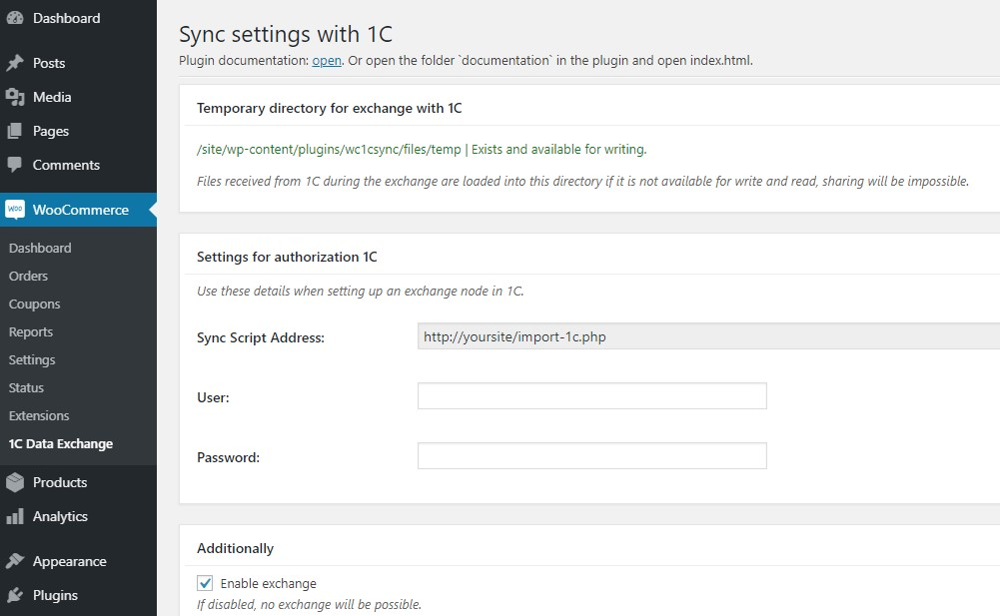
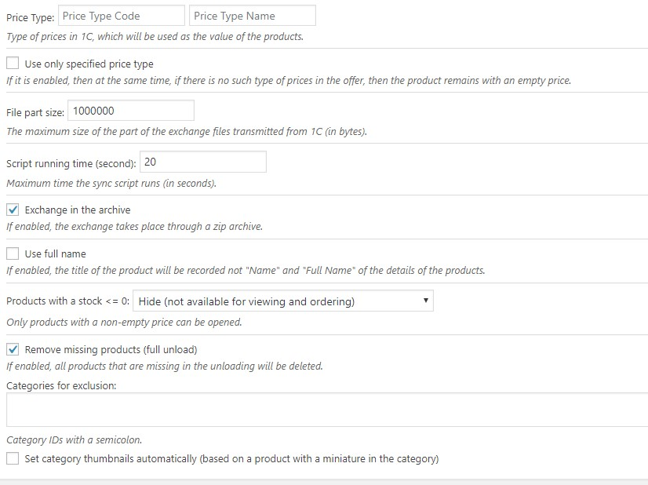
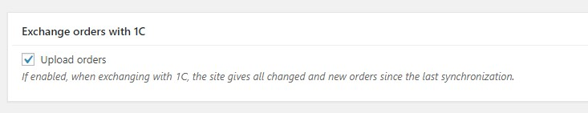
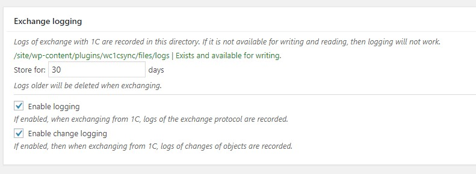

“WooCommerce - 1C - Data Exchange” Documentation by “itgalaxycompany” v1.0.0
“WooCommerce - 1C - Data Exchange”
Thank you for purchasing my plugin. If you have any questions that are beyond
the scope of this help file, please feel free to comments in page
here
. Thanks so much!
Table of Contents
-
About
-
Step 1 - Integration settings site
-
Step 2 - Integration settings 1C
A) About
-
top
The main task of the plugin is to implement the ability to synchronize data between the 1C accounting system and
the WooCommerce product catalog.
B) Step 1 - Integration settings site
-
top
Go to WooCommerce -> 1C Data Exchange. And make the basic settings.
Invent and fill in the "User" field.
Invent and fill in the Password field.
Check the box "Enable exchange"
Save the settings.

Now you can use the address, user and password when setting up the exchange node in 1C, about this in the next step.
Explanation of the parameters:
- Price Type - it will be filled in automatically at the first exchange and you can choose which type of prices to use on the site if several are unloaded. You can also fill it out manually before the first exchange, getting this data from xml.
- File part size - as a rule, hosting has a limit on the maximum data size during transfer, this option solves the problem of transferring large files. For example, the hosting has a limit of 32 megabytes, and only the import.xml file takes 60, as a result, it can’t be transferred at a time and 1C can divide it into parts, transferring “portions” byte to the site.
- Script running time - as a rule, there is a limit on average of 30-60 seconds, the execution time is the time for which the script should finish, but in this case, processing a huge upload, especially the first one, can take several hours. The parameter allows organizing the possibility of long-term sequential data processing.
- Exchange in the archive - it is advisable to always enable this option. When using it, 1C will compress the upload to the zip archive and transfer it already, which significantly speeds up the process of transferring data to the site, especially if you have a slow Internet, and also when there are a lot of pictures, then not every file is sent to the site individually, and one archive that is unpacked after receipt.
- Set category thumbnails automatically - check this if you want the plugin to put category pictures. A picture is set from the first product in this category with a picture, the picture is placed only in the category to which the product relates directly.

Unload orders - enable the option if you want to receive orders from the site in 1C (when setting up the exchange node in 1C, you must remember to enable the exchange of orders, otherwise 1C will not request them).

Logging - use as needed.

C) Step 2 - Integration settings 1C
-
top
Basic information on setting up in 1C:
https://dev.1c-bitrix.ru/learning/course/index.php?COURSE_ID=131&CHAPTER_ID=012323&LESSON_PATH=10211.12323
https://dev.1c-bitrix.ru/learning/course/index.php?COURSE_ID=131&CHAPTER_ID=06361&LESSON_PATH=10211.4923.6361
itgalaxycompany
Go To Table of Contents